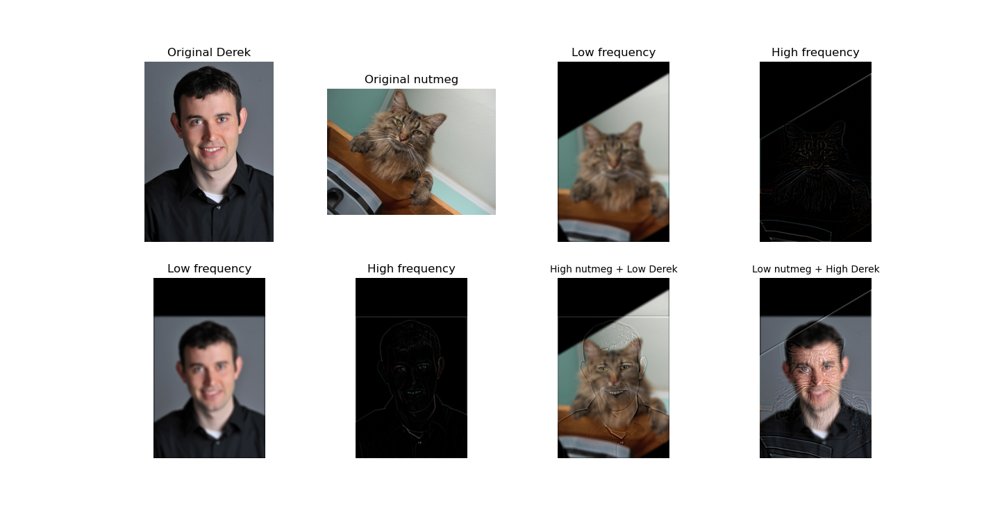

In this project, we use custom filters to perform various tasks, such as blending images and sharpening images. It’s really interesting! Below is the documentation and ideas behind my code:
First, I computed the partial derivatives in both the x and y directions using convolution with finite difference operators, where Dx = [1, -1] and Dy = [1, -1]T. Then, I calculated the gradient magnitude from these derivatives and binarized the result based on a threshold of 0.3. Here are the resulting images:

I created a 2D Gaussian kernel using a 1D Gaussian, then applied it to the input image via convolution. Afterward, I computed the partial derivatives in the x and y directions on the blurred image. I then computed the gradient magnitude and binarized the result using a threshold to display the results.
One thing I noticed is that the result using this technique has clearer and thicker edges. Additionally, the image has less noise, as small and irrelevant details are filtered out.

Next, I computed the derivatives of the Gaussian kernel in both the x and y directions, then convolved the image with these kernels to obtain the Difference of Gaussians (DoG) gradients. Afterward, I calculated the gradient magnitude and binarized it based on a threshold of 0.1. Here are the results.
Compared to the previous image, we can see that the results are essentially the same, as they are computed either in two separate steps or in one combined operation.

I separate my image into its RGB channels. Then, I applied a 2D Gaussian blur to each channel to obtain the low-frequency components. By subtracting the blurred image from the original image, I get the high-frequency image. Then I can use these high-frequency image to sharpen the image by adding them back with alpha. That is say , image + alpha * (image - blur_img). Here are the resulting images of two examples:


Then for evaluation, I pick a sharpen image and blur it and resharpen it. In my view, the resharpe image does not as good as original image. It is not really natrual.

Now, it is time to blend image! I first aligned my two images, and then applied a Gaussian filter with different sigmas to create low-frequency image of each image. Then I get high-frequency image by subtracting the blurred image from the original ones. Next, you generate two hybrid images by combining the low frequencies of one image with the high frequencies of the other. Here are my results of several pictures.


Although I get the hybrid moon&earth and LBJ&AD, my favourite image is still derek&nutmeg! Let's do fourier analysis.

I first construct a Gaussian stack for both apple and orange and the mask by repeatedly applying the Gaussian filter. Then I also create Laplacian stacks by subtracting each Gaussian level in the stack. I create a helper function create_mask to simply generate a mask that splits the image into two halves. Then, I blend the apple and orange images at each level of the Laplacian stack using the mask. This results in a combined image at each level.

I first construct two examples using vertical stack and horizontal stack except the origiinal orapple, which is following:


Then I do following irregular mask: